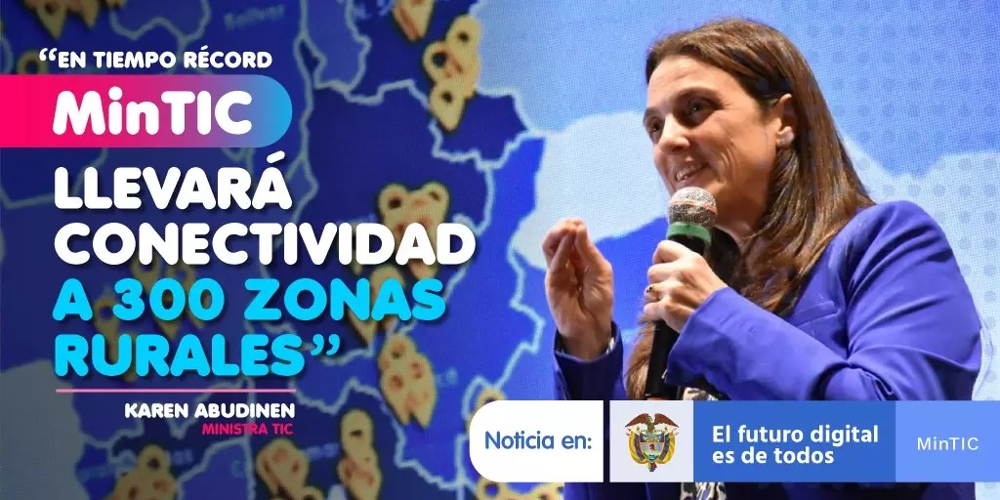
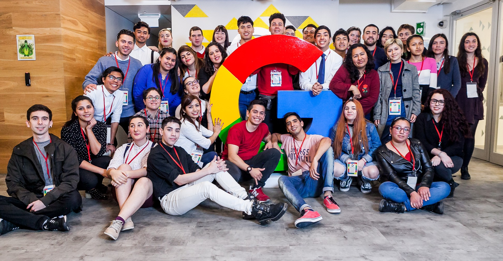

Noticias
A pesar de la renuncia, la Mesa Directiva de la Cámara de Representantes citó para mañana la votación de moción de censura
Luego de más de un mes en controversia y con la inminente salida del Gobierno de la ministra de las TIC, Karen Abudinen, finalmente se conoció que formalmente entregó su carta de renuncia al presidente de la República, Iván Duque. El jueves en la noche, la jefe de cartera presentó el comunicado oficial con su renuncia.
Después de entregar su renuncia, la exministra se pronunció a través de redes sociales con la lectura de la carta presentada al mandatario de los colombianos.
"Haber trabajado con disciplina y entrega en su Gobierno me llena de orgullo. Hoy me retiro adolorida por la circunstancias que el país conoce pero con la tranquilidad del deber cumplido, procedí con honradez y transparencia. Los que hoy se satisfacen lanzando humillaciones en mi contra, algún día cuando se imponga la verdad en todo su esplendor, reconocerán su error", expresó Abudinen en su carta.
Becas
Crece con Google para jóvenes
Google, en colaboración con Junior Achievement Américas, anuncia el lanzamiento de “Crece con Google para Jóvenes 2021-2022”, un programa gratuito que busca capacitar a jóvenes pertenecientes a grupos minoritarios y/o subrepresentados de Colombia y Latinoamérica en el uso de herramientas digitales, conocimientos de marketing digital y habilidades blandas. La convocatoria comenzará el 8 de septiembre y estará dirigida a jóvenes entre los 18 y 30 años de edad. Los interesados pueden registrarse aqui.
Equipo
inglés
coaching
programación
codifica tu mente
Servicios

Servicios de atención al estudiante UTP
Necesidad |
Oficina |
Datos de Contacto / Procedimiento |
|---|---|---|
| Quiero información sobre los programas académicos |
Admisiones Registro y Control Académico Oficina: Edificio de Sistemas Primer Piso |
Olga Olivia Alvarez Teléfono: 3137483 |
| Necesito un Certificado de Estudios o un Historial de Notas | Oficina: Edificio de Sistemas Primer Piso Ventanilla 9 | Andrea del Pilar Cubillos
Ospina
certificadosacademicos@utp.edu.co Teléfono: 3137182 |
| Necesito cambiar mi Código de Tarjeta de Identidad a Cédula | Oficina: Edificio de Sistemas Primer Piso Ventanilla 8 | Jhon Jairo Melchor
Bueno
Teléfono: 3137139 |
| No me aparece el correo institucional en el portal estudiantil |
Recursos Informáticos y Educativos - CRIE Oficina: Edificio 3, Piso 3, Oficina 307 |
Administración de redes y seguridad de la información
admred@utp.edu.co Teléfono: 3137144 |
| Tengo inconvenientes con el ingreso al Portal Estudiantil |
Gestión de Tecnologías Informáticas y Sistemas de Información Oficina: Primer piso, edificio de Sistemas |
Alvaro Linares Teléfono: 3137287 |
| Tengo inconvenientes con la liquidación de mi Matricula Financiera |
Oficina: Primer piso Edificio 3 |
Jhon James Ramirez Zapata Teléfono: 3137424 |
| Necesito financiar el costo de mi Matrícula |
Oficina: Edificio Cafetería Principal Galpón |
Marcela Duran
fasutcreditoeducativo@gmail.com Teléfono: 3211833 - 3137405 - 3022911311 |
| Necesito refinanciar el costo de mi Matrícula |
Vicerrectoría de Responsabilidad Social y Bienestar Universitario Oficina: Edificio de Bienestar Universitario, contiguo a la zona deportiva del campus universitario. |
María Mabel Velásquez Botero
Teléfono: 3137463 |
| Necesito apoyos Socioeconómicos |
Vicerrectoría de Responsabilidad Social y Bienestar Universitario Oficina: Edificio de Bienestar Universitario, contiguo a la zona deportiva del campus universitario. |
María Mabel Velásquez Botero Teléfono: 3137463 |
| Tengo algún tipo de Petición, Queja, Reclamo o Sugerencia |
Vicerrectoría Administrativa y Financiera Oficina: Edificio 1, Bloque A, Piso 3, Oficina 1A - 312 |
Patricia Idárraga Ángel
Teléfono: 3137211, Línea Gratuita 018000966781 (opción 1 y 2) |
|
Tengo alguna Denuncia por Corrupción |
Oficina: Edificio 1, Bloque A, Piso 1, Oficina 1A - 101 |
Luz Socorro Leontes Lenis
denunciascorrupcion@utp.edu.co Teléfono: 3137211, Línea Gratuita 018000966781 (opción 3) |